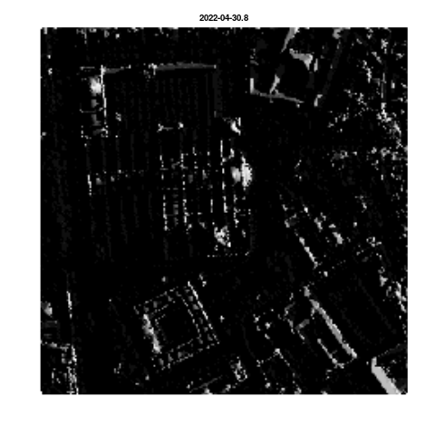

CityShadeMapper is an open source R package that generates high-resolution insolation or shade maps from remote sensing (LiDAR) data. Free LiDAR data are now available for many countries (e.g. Spain). Shade maps can be generated for every hour of the year and every square meter of entire cities (e.g. see https://www.mapasdesombra.org).
Usage
An example using LiDAR data from Sevilla, Spain (provided by IGN):
library("CityShadeMapper")
# Read LiDAR data
lidar <- read_lidar(system.file("extdata", "catedral.laz", package = "CityShadeMapper"))
# Calculate heights from LiDAR data
heights <- calc_heights_from_lidar(lidar)
# Calculate shade maps for 30 April (all day)
shade <- make_shademap(heights, date = "2022-04-30", hour = 8:21)
plot_shademap(shade, legend = FALSE, animate = TRUE, smooth = TRUE)
See https://www.mapasdesombra.org for a more developed application of shade maps at both the canopy and ground level for Sevilla city in southern Spain.
How it works
CityShadeMapper builds upon wonderful open source packages (e.g. lidR, solartime, rayshader, terra, GDAL, etc) that make it possible. CityShadeMapper uses the LiDAR point cloud to build a detailed height map of the city, including trees and buildings. From this height information, and knowing the sun position at every time of year given the geographic coordinates of the city, CityShadeMapper calculates the amount of solar rays hitting every pixel of the surface (either at the roof/canopy or the ground level).
Limitations
Shade intensity under tree canopies is currently fixed at a low (5% illumination) value. If there is information available about vegetation type, density, etc, it could be used to refine the calculation of shade intensities below tree canopies, i.e. at the ground level. Illumination calculations at the canopy/roof level is unaffected by this.
Citation
If you found CityShadeMapper useful we’d love to know. Please do get in touch. And please cite CityShadeMapper whenever you use it:
citation("CityShadeMapper")
To cite CityShadeMapper use:
Francisco Rodríguez-Sánchez & Jesús Sánchez-Dávila. CityShadeMapper:
Generate High Resolution Shade Maps and Shaded Routes from Remote
Sensing Data. https://pakillo.github.io/CityShadeMapper
A BibTeX entry for LaTeX users is
@Manual{,
title = {CityShadeMapper: Generate High Resolution Shade Maps and Shaded Routes from Remote Sensing Data},
author = {Francisco Rodríguez-Sánchez and Jesús Sánchez-Dávila},
year = {2022},
url = {https://pakillo.github.io/CityShadeMapper},
}